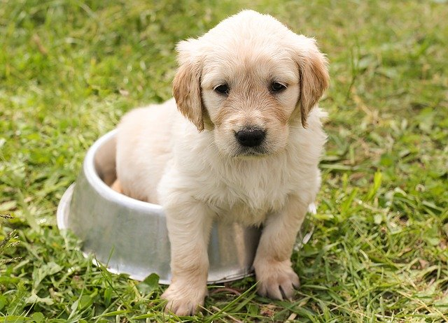

Pet Cuidado & Cia
Higiene
Alerta para a secagem
A umidade pode causar problemas de pele como fungos e bactérias. Por isso, seque bem o animal. Caso o
dia esteja quente e ensolarado, você poderá apenas secá-lo com uma toalha e depois deixá-lo andar no sol,
caso ele tenha pelos curtos.
Mas lembre-se: se seu animal estiver úmido e o tempo estiver frio, com vento, ele poderá ficar com a
resistência baixa e contrair um resfriado. Além disso, lembre-se de que, se você soltar seu pet livremente em
um gramado ou local com terra, você corre o risco de colocar todo o banho a perder.
O uso de um secador é obrigatório nos animais de pelos mais longos. Utilize escovas de arame (próprias
para seu bichinho) e secador em temperatura fria ou morna. Jamais use o aparelho na temperatura quente
sob o risco de causar queimaduras e machucar o animal.

Higiene Bucal
A escovação dos dentes é outro cuidado fundamental para a saúde do pet. Afinal, a higiene bucal também evita o
surgimento de doenças. Sem falar que impede o acúmulo de tártaro e a proliferação de bactérias pelo organismo. Por isso,
deve ser feita com frequência e utilizando escova e creme dental exclusivo para uso animal.
Mime seu bichinho
Principalmente se seu pet não gosta do banho, mimá-lo após o procedimento é uma boa estratégia. Dê-lhe
uma gostosura (própria para sua espécie) e faça muito carinho. Assim, ele sempre se lembrará de que a
hora do banho pode ser muito boa!
Leia sobre